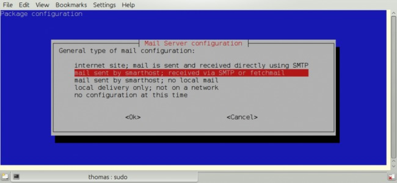
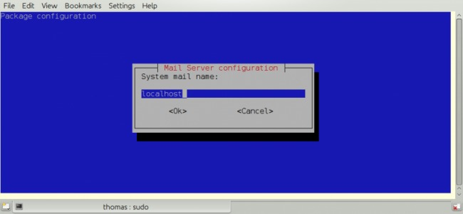
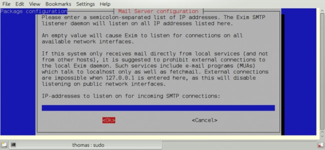
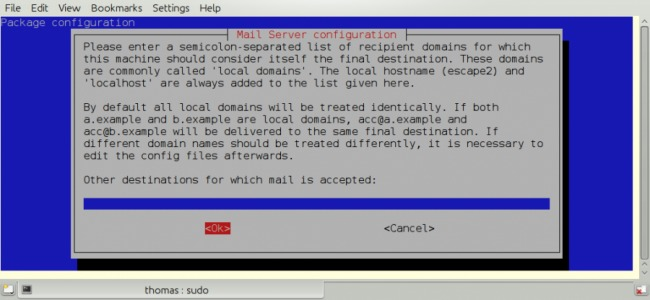
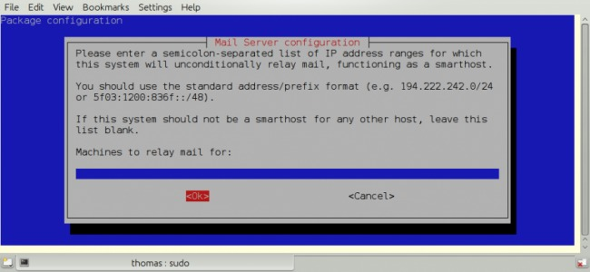
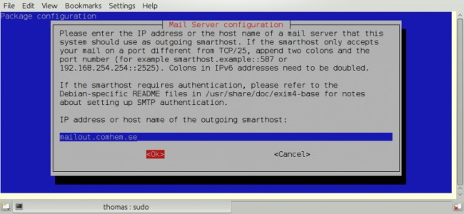
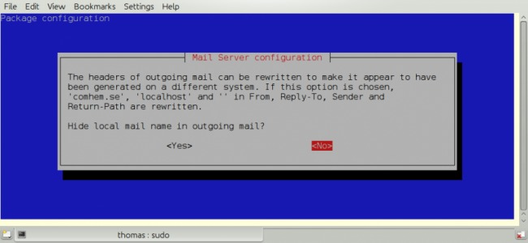
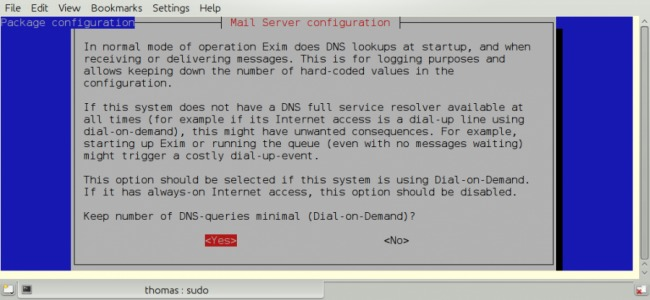
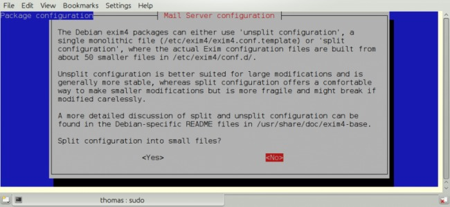

Mail Servers
Warning!
This is an Advanced subject, that is not necessary for running the grib plugin.
Do not try these setups unless you are familiar with your operating system, comfortable with handling the command line interface and editing configuration files.
Do not expect these instructions to work without some customization.
This page contains detailed instructions on how to set up mailservers to automatically send grib request mails to Sail Docs.
“Ptizef” & “rgleason” have compiled the instructions for Windows/Thunderbird
“Ptizef” has compiled the instructions for Linux/SSMTP.
“Cagney” has compiled the instructions for Linux/Exim4.
“CarCode” has compiled the instructions for Mac OS X/PostFix .
Windows MAPI Mail Server Setup
The plugin's email request depends on the user's selection of the default MAPI email program which is dependent on the Operating System conventions. Linux, Windows and Mac are all different. If the plugin does not find a default MAPI program, an appropriate message will show in the plugin menu:
Request can't be sent. Please verify your email system parameters. You should also have a look at your log file. Save or Cancel to finish...
and there will be an error message in the opencpn.log similar to:
10:55:47 PM: MAIL Error: Failed to logon to MAPI using a shared session, Error:3
To fix this problem use a google search, and find links such as Fix CLS Send, MAPI or Runtime Error in Email
Windows 10 or 8.1 and Thunderbird
For example, if you use Thunderbird exclusively with Win10 or Win8.1, this should fix the problem
Start > Control Panel > Default Programs > Set your Default Programs, Then pick Thunderbird.
Windows Vista or XP and Thunderbird
- Outside OpenCPN there is nothing more to do except to ensure that there is a mail system (mine is thunderbird) correctly configured and set as “main” on the device.
also verify if the mapi32.dll is present in c:/windows/system32 (or equivalent for 64b) (otherwise an error message will be the result).
- Inside OpenCPN, there is nothing to do; the sender mail address can be entered, but will not be used. Just don't forget to enter the zyGRIB login and password.
When clicking on “send” button :
if the “main” mail system is not open, OpenCPN opens it and the waiting messages are received.
remark : if there are many waiting messages, it could take a while. That is why it would be better to create a specific address for this purpose.
Then a new mail page is opened with all mail elements already written thus ready to be sent.
Linux
Using SSMTP
How to install and configure sSMTP:
- 1) Install the ssmtp package.
If another MTA is already installed, you may be asked to uninstall it before installing ssmtp.
Once it's done you can test it by typing this command:
“whereis sendmail”
The answer should be something like “/usr/sbin/sendmail”.
Use that answer in the next command:
“ls -la /usr/sbin/sendmail”
If everything is OK you should get this answer:
“/usr/sbin/sendmail → ssmtp”
showing that Sendmail function is now connected to ssmtp.
- 2) Now there are two files to set:
the first file : /etc/ssmtp/ssmtp.conf ( with root rights )
The typical setting should be:
root=postmaster
AuthUser=yourlogin to your ISP access
AuthPass=yourpasseword to your ISP access
mailhub=yourISPserveurname.yourdomain (for example smtp.orange.fr)
rewriteDomain=yourdomain
FromLineOverride=YES
hostname= the full host-name ( normally automatically entered, but if not you can type the command : “hostname” to get it)
For ISP requiring a TLS connection , it could be necessary to add the line UseTLS=YES or UseSTARTTLS=YES
the second file : /etc/ssmtp/revaliases (with root rights)
Enter this line.
root:yourlogin@yourdomain:yourISPserveurname.yourdomain
the default port was 25 but now many ISP refuse it and use 587. If you have a mail system, you will find the right value in it.sudo dpkg-reconfigure exim4-config
Sendmail/Postfix install for Mac
- Inside OpenCPN :You must enter the sender address : your entire mail address, the one you will use to send mails and receive answers
When you click on the “send” button, the mail is directly sent. You can find the log here : /var/log/mail.log
Using Exim4
First install Exim4
$sudo apt-get install exim4
then configure it (again).
$sudo dpkg-reconfigure exim4-config
This is a very simple setup where exim is just used to forward mail to the ISP:s smtp server. Local system mail is also available.

It's important to use the choice above.

I just use “localhost”.

We have no incoming connections.

We are not using this.

We are not using this.

This is important. It must point to your Internet Service Providers SMTP server.

Your choice!

RTFM and make up your mind. Not a big deal for this simple setup.

RTFM.

Your Choice, but no point in splitting this simple setup.
Edit /etc/exim4/passwd.client so it contains your username and password to your ISP:s mail server.
| # password file used when the local exim is authenticating to a remote_PARATABLE_INS_# host as a client._PARATABLE_INS_#_PARATABLE_INS_# see exim4_passwd_client(5) for more documentation_PARATABLE_INS_#_PARATABLE_INS_# Example:_PARATABLE_INS_### target.mail.server.example:login:password_PARATABLE_INS_# for OpenCPN you can use *:login:password_PARATABLE_INS_*:fakexyz123:madeupXYZ123 |
(Re)start Exim4
$ /etc/init.d/exim4 {start|stop|restart|reload|status|what|force-stop}
Start testing
Mac OS X
Using Sendmail/Postfix
It is not so easy to install this on a Mac since you will need some experience with terminal using. The example below uses an googlemail account and nano as editor:
Step 1
Type in terminal these 6 lines one after another with return:
sudo mkdir -p /Library/Server/Mail/Data/spool
sudo gzip /usr/share/man/man1/{postalias.1,postcat.1,postconf.1,postdrop.1,postf ix.1,postkick.1,postlock.1,postlog.1,postmap.1,pos tmulti.1,postqueue.1,postsuper.1,sendmail.1}
sudo gzip /usr/share/man/man5/{access.5,aliases.5,bounce.5,canonical.5,cidr_tabl e.5,generic.5,header_checks.5,ldap_table.5,master. 5,mysql_table.5,nisplus_table.5,pcre_table.5,pgsql _table.5,postconf.5,postfix-wrapper.5,regexp_table.5,relocated.5,tcp_table.5,t ransport.5,virtual.5}
sudo gzip /usr/share/man/man8/{anvil.8,bounce.8,cleanup.8,discard.8,error.8,flus h.8,local.8,master.8,oqmgr.8,pickup.8,pipe.8,proxy map.8,qmgr.8,qmqpd.8,scache.8,showq.8,smtp.8,smtpd .8,spawn.8,tlsmgr.8,trivial-rewrite.8,verify.8,virtual.8}
sudo /usr/sbin/postfix set-permissions
sudo chmod 700 /Library/Server/Mail/Data/mta
Step 2
Type in terminal another command to start the nano editor with this file:
sudo nano /etc/postfix/sasl_passwd
Type into the nano editor:
smtp.googlemail.com:587 YourAccountname@googlemail.com:YourPassword
Substitute YourAccountname and YourPassword with your data.
Save the file in nano with Ctrl-O and exit with Ctrl-X.
Step 3
Publicate the new file in terminal with this command:
sudo postmap /etc/postfix/sasl_passwd
Step 4
You have to edit the main config file and add at the end the following lines with
this command in Terminal:
sudo nano /etc/postfix/main.cf
This to add:
# Minimum Postfix-specific configurations.
mydomain_fallback = localhost
mail_owner = _postfix
setgid_group = _postdrop
relayhost=smtp.googlemail.com:587
# Enable SASL authentication in the Postfix SMTP client.
smtp_sasl_auth_enable=yes
smtp_sasl_password_maps=hash:/etc/postfix/sasl_passwd
smtp_sasl_security_options=
# Enable Transport Layer Security (TLS), i.e. SSL.
smtp_use_tls=yes
smtp_tls_security_level=encrypt
tls_random_source=dev:/dev/urandom
Save the file and exit nano as in step 2.
Step 5
Now you can start postfix in terminal with:
sudo postfix start
If an error occurs correct main.cf and start again with:
sudo postfix reload
Step 6
Now you can test your work in terminal with:
date | mail -s test YourAccountname@googlemail.com
Done.
Supplemental
If you want to have started sendmail/postfix each time you start you start
your machine you can add these lines to the launch daemon:
<key>RunAtLoad</key>
<true/>
Do this with this command in terminal:
sudo nano /System/Library/LaunchDaemons/org.postfix.master.plist
After that this file should look like this:
<?xml version=“1.0” encoding=“UTF-8”?>
<!DOCTYPE plist PUBLIC "-//Apple Computer//DTD PLIST 1.0//EN" "http://www.apple.com/DTDs/PropertyList-1.0.dtd">
<plist version=“1.0”>
<dict>
<key>Label«/key>
<string>org.postfix.master</string>
<key>Program</key>
<string>/usr/libexec/postfix/master</string>
<key>ProgramArguments</key>
<array>
<string>master</string>
<string>-e</string>
<string>60</string>
</array>
<key>QueueDirectories</key>
<array>
<string>/var/spool/postfix/maildrop</string>
</array>
<key>AbandonProcessGroup</key>
<true/>
<key>OnDemand/lt;/key>
<true/>
<key>RunAtLoad</key>
<true/>
</dict>
</plist>
Instead of googlemail in this example you may use any other mail server.